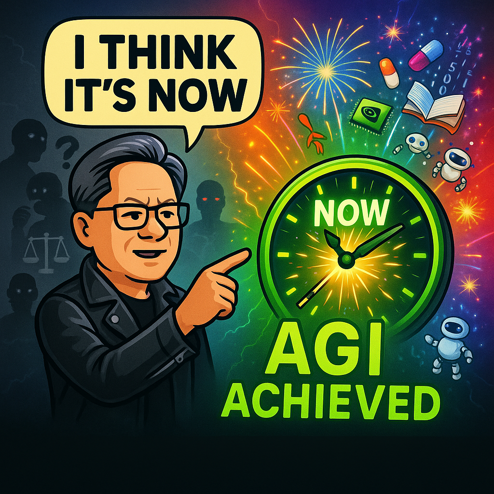

They told us AGI was decades away. The stuff of science fiction. Something our grandchildren might see, if we were lucky.
Then Jensen Huang sat down with Lex Fridman last week and reset the clock to zero. When asked if an AI could start, grow, and run a successful tech company worth more than $1 billion, the Nvidia CEO did not hesitate. "I think it's now," he said. "I think we've achieved AGI."
No drumroll. No countdown. Just the CEO of a $4 trillion company stating the milestone like he had finished his morning coffee.
That was not a press conference. It was a wake-up call most people slept through.
While You Were Debating "Ethical AI," the Revolution Started Without You

Here is what happened while the internet argued about whether ChatGPT is "cheating":
Eli Lilly just inked a $2 billion deal to develop drugs using AI, potentially cutting years off the timeline for new medications reaching patients.
South Korean chip startup Rebellions raised $400 million at a $2.3 billion valuation to build processors specifically for AI inference, challenging Nvidia's dominance before their IPO.
Over half of U.S. federal judges now use AI tools for legal research and case assessment, according to recent studies.
Arkansas Tech University launched an AI specialization because employers cannot hire trained talent fast enough.
The revolution did not send invitations. It did not wait for permission. It just showed up and started rebuilding industries while we were still debating if it was ethical.
The Great Job Cut Scapegoat
Here is where we need to be honest about what is really happening.
Tech CEOs are suddenly blaming AI for mass layoffs. Convenient timing, right? After years of overhiring, overspending, and overpromising to Wall Street, they have found the perfect excuse: "Sorry, AI did it."
But here is what the headlines will not tell you: most of these layoffs are not about AI replacing workers. They are about executives needing to show investors they can cut costs, and AI makes for better PR than admitting to bad management decisions.
The AI revolution is real. So is corporate scapegoating. Knowing the difference matters.
Access Is Becoming the Real Divider
The same technologies that could democratize everything are being locked behind paywalls that would make a luxury car dealer blush.
While elite private schools charge $55,000 per year for AI-powered personalized learning, Arkansas Tech is scrambling to train regular students for an AI-driven economy. While pharmaceutical giants pour billions into AI drug discovery, regular researchers cannot afford the compute credits to run basic experiments.
This is the real AI divide, and it is not about the technology itself. It is about who gets to use it.
The singularity was supposed to liberate humanity. Instead, it is on track to become the world's most expensive subscription service.
The 80% Fear Problem
A new survey found 80% of Americans are concerned about AI's impact on society. Job displacement. Privacy erosion. Loss of human control.
This is not irrational fear. This is what happens when revolutionary technology arrives without a roadmap for regular people to participate in building it.
When half the federal judiciary is already using AI tools for case work, but the public is still arguing about whether The Terminator was a documentary, something is broken in how we are communicating this shift.
The fear is not the problem. The lack of access to understanding is.
Why Some People Want You Confused About AGI
Let's be clear about why the "what even is AGI?" debate serves certain interests.
If you define AGI as human-level intelligence across all domains, we have not achieved it. If you define it as AI systems capable of autonomous reasoning and task-completion across domains, well, it depends who you ask, what domain you look at, and what day it is.
The definitional confusion is not an accident. It is a shield.
While we are fighting about semantics, companies are deploying systems that automate entire workflows. While we are debating philosophy, industries are being restructured. While regulators try to craft policy for a moving target, the technology keeps advancing.
The revolution does not care whether we have agreed on definitions. It only cares that most people are too busy arguing to notice they are already living in it.
The Hardware Arms Race Nobody's Talking About
Silicon is not sexy, but it is decisive.
Rebellions is not raising $400 million because investors are bored. Meta did not add 650 megawatts of solar power for their health. These are infrastructure bets that reveal where smart money thinks this is headed.
The AI revolution requires resources, and whoever controls the chips controls the game.
This is why Nvidia's AGI claim matters beyond the headline. When the company that dominates AI compute says we have reached general intelligence, they are not just making a technical statement. They are signaling where the Overton window is moving.
The Question Isn't Whether AI Will Change Everything
Spoiler: It already has.
The way drugs are discovered? Changed.
The way legal research happens? Changed.
The way students are educated? Changing.
The way jobs are lost and who is blamed? Changed.
The question is whether we will shape this revolution or watch it shape us.
Will AI be a democratizing force that puts powerful tools in everyone's hands? Or will it become another mechanism for consolidating wealth and gatekeeping opportunity?
That is not a technical question. It is a values question. And it is one we are answering every day through the systems we build, the policies we accept, and the access we demand.
The Revolution Won't Wait for Your Permission
You do not get to opt out. AI is in courtrooms, classrooms, hospitals, and hiring departments, whether you have decided to adopt it or not.
The only choice you have is whether you will understand it, access it, and help steer where it goes. Or whether you will keep waiting for permission that is not coming.
Because here is the truth: The AI revolution did not start yesterday. It started months ago.
While we were debating.
While we were waiting.
While they were building.
You can panic if you want. You can pretend it is not happening. You can demand someone save you from the future.
Or, you can recognize the revolution already happened, grab the tools, and start building something better.
Get More Articles Like This
Stay ahead of the AI revolution. I'm documenting every major shift, breakthrough, and lesson learned as we navigate this transformation.
Subscribe to receive updates when we publish new content. No spam, just real analysis from the front lines.